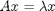
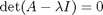
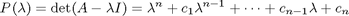

Faddeev-Leverrier Algorithm
A MATLAB implementation of the Faddeev-Leverrier algorithm to compute the coefficients of the characteristic polynomial of a given matrix and to get the inverse of the matrix without extra cost.
Contents
The Faddeev-Leverrier Algorithm
Consider an n x n matrix, A. The eigenvalue of A defined as follows

can be obtained by solve the equation

where the left hand side determinant defines the characteristic polynomial of A

The Faddeev-Leverrier algorithm is an efficient approach to find the coefficients of the characteristic polynomial. In addition, the inverse matrix of A is obtained at no extra computational cost.
MATLAB Function FADLEV
FADLEV Faddeev-Leverrier approach to generate coefficients of the characteristic polynomial and inverse of a given matrix
Uasage: [p,Ainv,B]=fedlev(A)
Input: A - the given matrix
Output: p - the coefficient vector of the characteristic polynomial
B - a cell array of the sequency of matrices generated, where
B{1} = A p(1)=trace(B{1}) B{2} = A*(B{1}-p(1)*I) p(2)=trace(B{2})/2.....
B{n} = A*(B{n-1}-p(n-1)*I) p(n)=trace(B{n})/nAinv - The inverse of A calculated as
Ainv = (B{n-1}-p(n-1)*I)/p(n)Example 1
An integer matrix of 5 x 5
A=magic(5); [p,B]=fadlev(A); fprintf('Check inverse: norm(B-inv(A))=%g\n',norm(B-inv(A))); fprintf('Check polynomial: norm(p-poly(A))=%g\n',norm(p-poly(A)));
Check inverse: norm(B-inv(A))=2.80604e-017 Check polynomial: norm(p-poly(A))=2.10923e-009
Example 2
A random matrix of 10 x 10
G=randn(10); [q,H]=fadlev(G); fprintf('Check inverse: norm(H-inv(G))=%g\n',norm(H-inv(G))); fprintf('Check polynomial: norm(q-poly(G))=%g\n',norm(q-poly(G)));
Check inverse: norm(H-inv(G))=8.90886e-014 Check polynomial: norm(q-poly(G))=1.28342e-012
Reference
Vera Nikolaevna Faddeeva, "Computational Methods of Linear Algebra," (Translated From The Russian By Curtis D. Benster), Dover Publications Inc. N.Y., Date Published: 1959 ISBN: 0486604241.